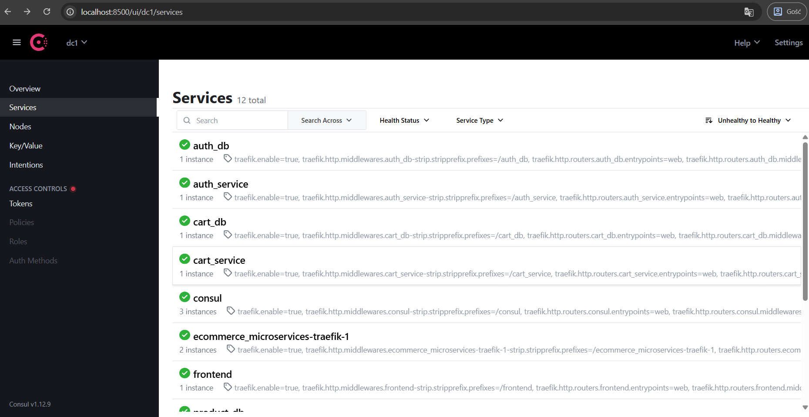
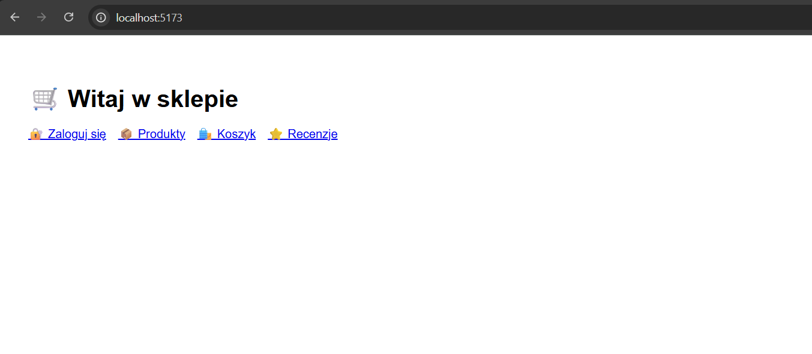

Traefik – acts as a dynamic API
Gateway and Reverse Proxy, routes HTTP(S)
traffic to appropriate microservices based on domain names and paths. It
also manages SSL certificates (Let’s Encrypt) and
integrates with Consul for service discovery.
Traefik screenshot
Consul – provides Service
Discovery and simple Load Balancing by
registering available services and their health.

Consul screenshot
PostgreSQL – used as the relational
database (RDBMS).
Redis – in-memory cache to
reduce database load.
JWT – used for secure authentication and
authorization between services.
Vite – for building the frontend.

Frontend screenshot
Note: Each microservice has its own database
instance.
Logging
All services log their activity. Each service has a logs
directory. The logging level is set in the api.env file.
Available logging levels:
DEBUG
INFO
ERROR
Service Discovery and Load
Balancer
Consul handles service discovery and load balancing. All services
register automatically using the service_registrar script
during startup (via Docker Compose).